重点解析chorme浏览器的缓存机制。
背景
浏览器缓存 是浏览器将用户请求过的静态资源（html、css、js），存储到电脑本地磁盘中，当浏览器再次访问时，就可以直接从本地加载了，不需要再去服务端请求了。
缺点：如果处理不当，可能会导致服务端代码更新了，但是用户却还是老页面。所以前端们要针对项目中各个资源的实际情况，做出合理的缓存策略。
优点：
- 减少了冗余的数据传输，节省网费
- 减少服务器的负担，提升网站性能
- 加快了客户端加载网页的速度
缓存分类
web缓存分为很多种：数据库缓存、代理服务器缓存、还有我们熟悉的CDN缓存，以及浏览器缓存。
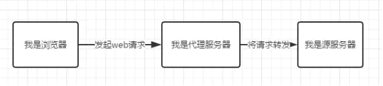
浏览器缓存是将文件保存在客户端，在同一个会话过程中会检查缓存的副本是否足够新，在后退网页时，访问过的资源可以从浏览器缓存中拿出使用。通过减少服务器处理请求的数量，用户将获得更快的体验
浏览器缓存
- 强缓存
- 协商缓存
强缓存
简单粗暴，如果资源没过期，就取缓存，如果过期了，则请求服务器。
控制强制缓存的字段分别是Expires和Cache-Control，其中Cache-Control的优先级 ＞ Expires的优先级
Cache-Control（重要策略Response Headers）
1.max-age（单位为s）指定设置缓存最大的有效时间，定义的是时间长短当浏览器向服务器发送请求后，在max-age这段时间里浏览器就不会再向服务器发送请求。
如：shang.qq.com上的css资源，max-age=2592000，也就是说缓存有效期为2592000秒（也就是30天）。于是在30天内都会使用这个版本的资源，即使服务器上的资源发生了变化，浏览器也不会得到通知。
注：max-age会覆盖掉Expires。
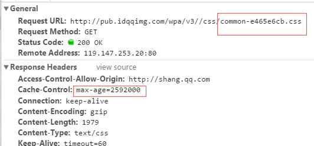
2.s-maxage（单位为s）同max-age，只用于共享缓存（比如CDN缓存）比如，当s-maxage=60时，在这60秒中，即使更新了CDN的内容，浏览器也不会进行请求。也就是说max-age用于普通缓存，而s-maxage用于代理缓存。如果存在s-maxage，则会覆盖掉max-age和Expires header。
3.public 指定响应会被缓存，并且在多用户间共享如果没有指定public还是private，则默认为public。
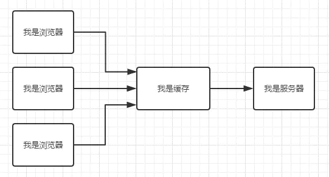
4.private 响应只作为私有的缓存（见下图），不能在用户间共享如果要求HTTP认证，响应会自动设置为private。
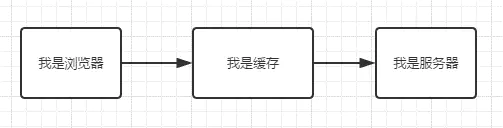
5.no-cache 指定不缓存响应，表明资源不进行缓存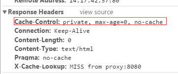
设置了no-cache之后并不代表浏览器不缓存，而是在缓存前要向服务器确认资源是否被更改。因此有的时候只设置no-cache防止缓存还是不够保险，还可以加上private指令，将过期时间设为过去的时间。
6.no-store 绝对禁止缓存如果用了这个命令就不会进行缓存，每次请求资源都要从服务器重新获取。
7.must-revalidate指定如果页面是过期的，则去服务器进行获取
request的cache-control和response的cache-control的区别？定义：
- response中的cache-control：由服务器应答时发送的cache-control
- request中的cache-control：由用户代理，通常是浏览器，请求资源时发送的cache-control
cache-control:no-cache 告诉HTTP消息链上的缓存系统(也就是浏览器的缓存和代理服务器上的缓存)，本次请求要求忽略一级缓存，必须是原始服务器重新计算生成回应给用户。
即使浏览器上的本地缓存未过期，或者代理服务器上的缓存未过期，都不要将这些缓存作为回应，请求头里的no-cache表示浏览器不想读缓存，并不是说没有缓存。当我们在浏览器中强制刷新页面（按ctrl+F5），发送的就是这个头（不同很多浏览器将cache-contro:no-cache和pragam:no-cache两个头一起发送）；如果直接按F5的话，请求头是max-age=0，只跳过强缓存，但进行协商缓存。
pragma:no-cache 和cache-control:no-cache一样，不过出于兼容HTTP/1.0，所以有些浏览器会保留这个头。注意pragma:no-cache只应该出现在Request中，表明不想获取缓存。HTTP没有哪条条文对Response中的pragma:no-cache进行定义，所以Response中的pragma:no-cache是无效的。
response的cache-control：cache-control:no-cache 服务器告诉HTTP消息链上的缓存系统（比如varnish， squid，cdn等），不要缓存这个response结果。其实这个不是百分百肯定，而且不同浏览器好像接收到这个头时也有不同反应。
chrome：再访问相同的URL时候是发出if-modified-since。这说明即使接收到cache-control:no-contro，chrome也会进行缓存（协商缓存）。
IE9: 再次访问相同URL时，跟第一次访问（无缓存情况下）一样，没有if-modified-since，也没有其他缓存相关的头域，而且缓存文件夹也没有缓存文件。也就是说，IE9接收到cache-control:no-cache，不会将response内容缓存起来。
FF：跟IE9行为类似
Expires
Expires是HTTP/1.0控制网页缓存的字段，其值为服务器返回该请求结果，缓存的到期时间，即再次发起该请求时，如果客户端的时间小于Expires的值时，直接使用缓存结果，而无需再次请求。Expires=max-age + 请求时间，需要和Last-modified结合使用。
到了HTTP/1.1，Expires已经被Cache-Control替代。
原因：Expires 控制缓存的原理是使用客户端的时间与服务端返回的时间做对比，那么如果客户端与服务端的时间因为某些原因（例如时区不同；客户端和服务端有一方的时间不准确）发生误差，那么强制缓存则会直接失效，这样的话强制缓存的存在则毫无意义。
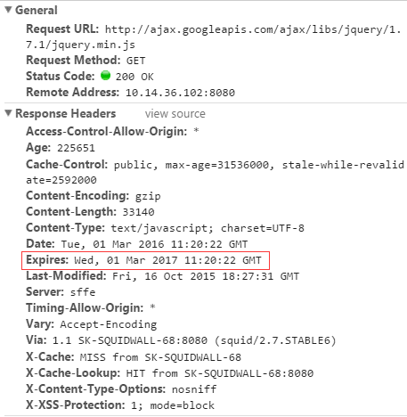
强缓存流程：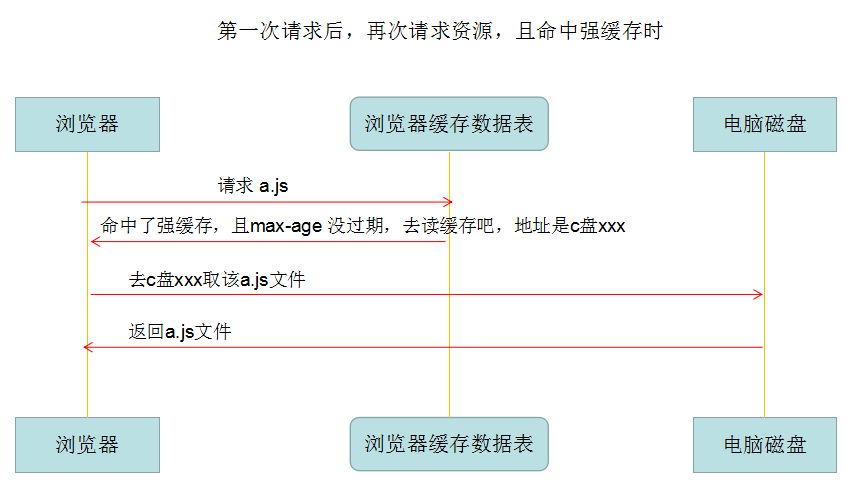
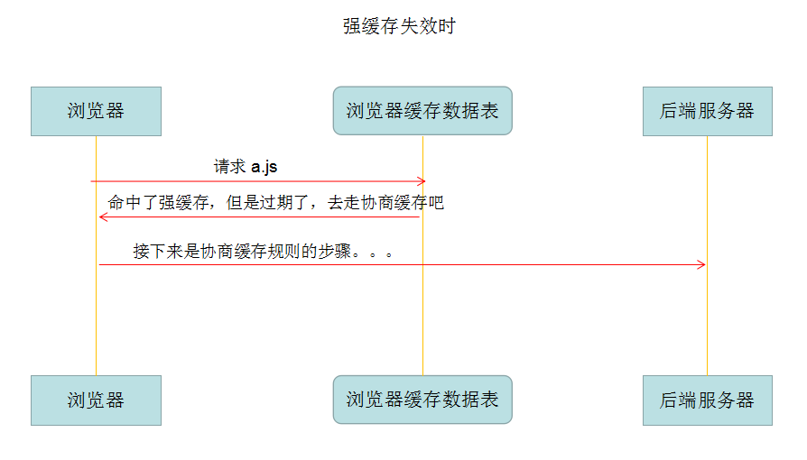
整体过程：
- 第一次请求 a.js ，缓存表中没该信息，直接请求后端服务器。
- 后端服务器返回了 a.js ，且 http response header 中 cache-control 为 max-age=xxxx，所以是强缓存规则，存入缓存表中。
- 第二次请求 a.js ，缓存表中是 max-age， 那么命中强缓存，然后判断是否过期，如果没过期，直接读缓存的a.js，如果过期了，则执行协商缓存的步骤了。
no-cache直接不进行强缓存，走协商缓存，而max-age=0是进行强缓存，但是过期了，需要更新。虽然实际上看起来两者效果是一样的。
协商缓存
触发条件- Cache-Control 的值为 no-cache （不强缓存）
- 或者 max-age 过期了 （强缓存，但总有过期的时候）
也就是说，不管怎样，都可能最后要进行协商缓存（no-store除外）
Last-modified
服务器端文件的最后修改时间，需要和cache-control共同使用，是检查服务器端资源是否更新的一种方式。
当浏览器再次进行请求时，会向服务器传送If-Modified-Since报头，询问Last-Modified时间点之后资源是否被修改过。如果没有修改，则返回码为304，使用缓存；如果修改过，则再次去服务器请求资源，返回码和首次请求相同为200，资源为服务器最新资源。
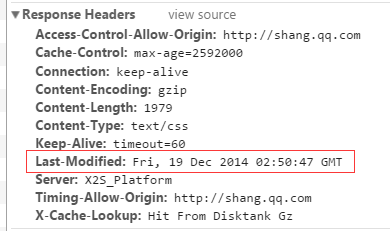
ETag
根据实体内容生成一段hash字符串，标识资源的状态，由服务端产生。浏览器会将这串字符串传回服务器，验证资源是否已经修改，如果没有修改，过程如下：
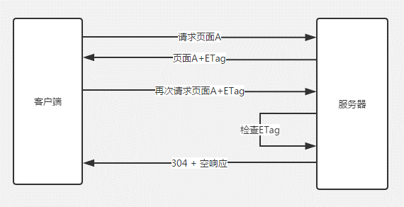
使用ETag可以解决Last-modified存在的一些问题：
- 某些服务器不能精确得到资源的最后修改时间，这样就无法通过最后修改时间判断资源是否更新
- 如果资源修改非常频繁，在秒以下的时间内进行修改，而Last-modified只能精确到秒
- 一些资源的最后修改时间改变了，但是内容没改变，使用ETag就认为资源还是没有修改的。
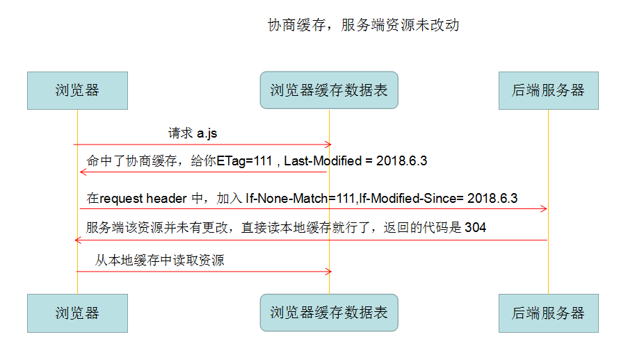
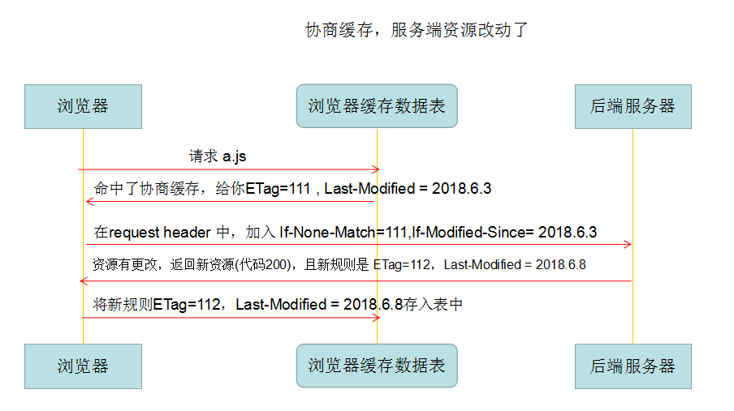
每次http返回来 response header 中的 ETag和 Last-Modified，在下次请求时在 request header 就把这两个带上（但是名字变了ETag-->If-None-Match，Last-Modified-->If-Modified-Since ），服务端把你带过来的标识，资源目前的标识，进行对比，然后判断资源是否更改了。
这个过程是循环往复的，即缓存表在每次请求成功后都会更新规则。
整体过程：
- 请求资源时，把用户本地该资源的 ETag 同时带到服务端，服务端和最新资源做对比。
- 如果资源没更改，返回304，浏览器读取本地缓存。
- 如果资源有更改，返回200，返回最新的资源。
浏览器缓存位置
以博客的请求为例，状态码为灰色的请求则代表使用了强制缓存，其中的Size的值记录了该缓存存放的位置。分别为from memory cache 和 from disk cache。如下图：
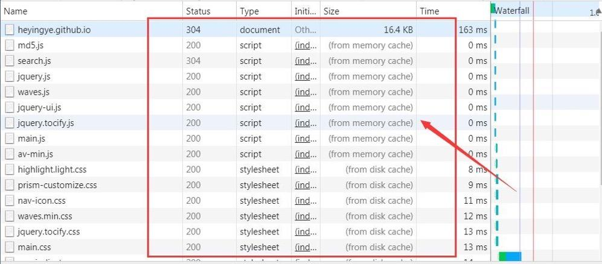
内存缓存(from memory cache)内存缓存具有两个特点，分别是快速读取和时效性。
- 快速读取：内存缓存会将编译解析后的文件，直接存入该进程的内存中，占据该进程一定的内存资源，以方便下次运行使用时的快速读取
- 时效性：一旦该进程关闭，则该进程的内存则会清空
- 硬盘缓存则是直接将缓存写入硬盘文件中，
- 读取缓存需要对该缓存存放的硬盘文件进行 I/O 操作，然后重新解析该缓存内容，速度比内存缓存慢
浏览器读取缓存的顺序为memory cache => disk cache
- 浏览器会在js 文件和图片文件等解析执行完成后直接存入内存缓存中，当我们刷新页面时浏览器只需直接从内存缓存中读取文件
- css 文件则会存入硬盘文件中，所以每次渲染页面都需要从硬盘缓存中读取
缓存命中显示
1.从服务器获取新的资源
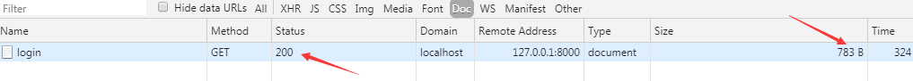
2.命中强缓存，且资源没过期，直接读取本地缓存
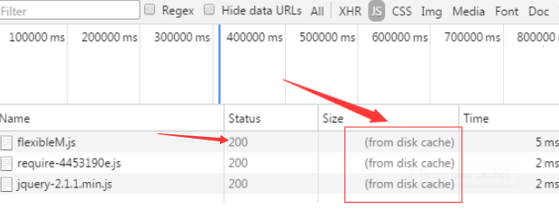
3.命中协商缓存，且资源未更改，读取本地缓存
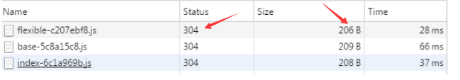
注意协商缓存无论如果，都要向服务端发请求的，只不过，资源未更改时，返回的只是header信息，所以size很小；而资源有更改时，还要返回body数据，所以size会大。
总结
强缓存与协商缓存的区别
| 缓存类型 | 获取资源形式 | 状态码 | 发送请求到服务端 |
| 强缓存 | 从缓存取 | 200（from cache） | 否，直接从缓存取 |
| 协商缓存 | 从缓存取 | 304（Not Modified） | 是，通过服务器来告知缓存是否可用 |
- 强制缓存优先于协商缓存进行
- 若强制缓存(Expires 和 Cache-Control)生效则直接使用缓存，若不生效则进行协商缓存(Last-Modified / If-Modified-Since 和 Etag / If-None-Match)
- 协商缓存由服务器决定是否使用缓存。
- 若协商缓存生效，返回状态码304，使用浏览器缓存文件
- 若协商缓存失效，返回状态码200，重新获取请求结果，再存入浏览器缓存中
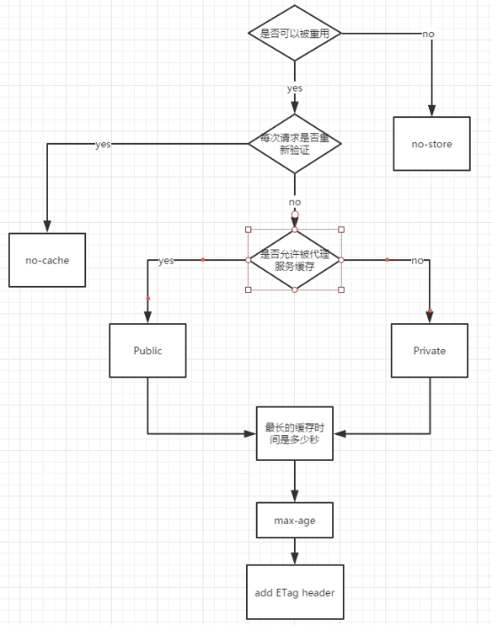
用户行为对缓存的影响
| 用户操作 | Expires/Cache-Control | Last Modied/Etag |
| 地址栏回车 | 有效 | 有效 |
| 页面链接跳转 | 有效 | 有效 |
| 新开窗口 | 有效 | 有效 |
| 前进回退 | 有效 | 有效 |
| F5刷新 | 无效 | 有效 |
| Ctrl+F5强制刷新 | 无效 | 无效 |
即：F5 会 跳过强缓存规则，直接走协商缓存；Ctrl+F5 ，跳过所有缓存规则，和第一次请求一样，重新获取资源
整体流程
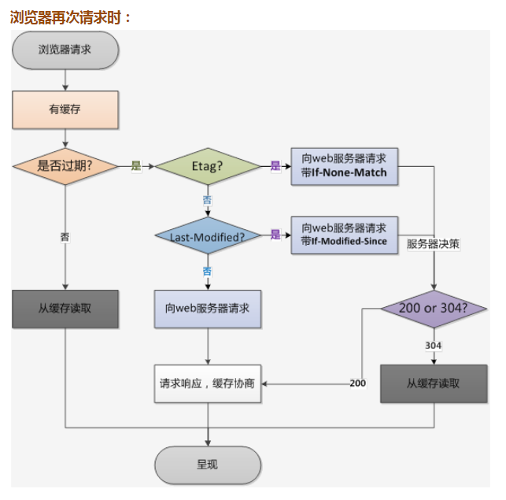
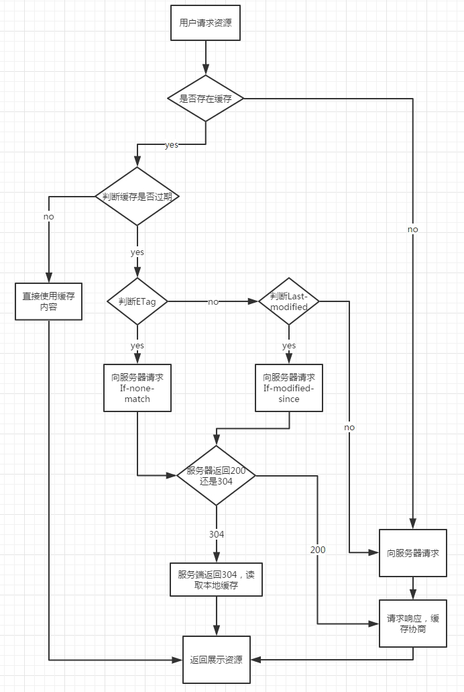